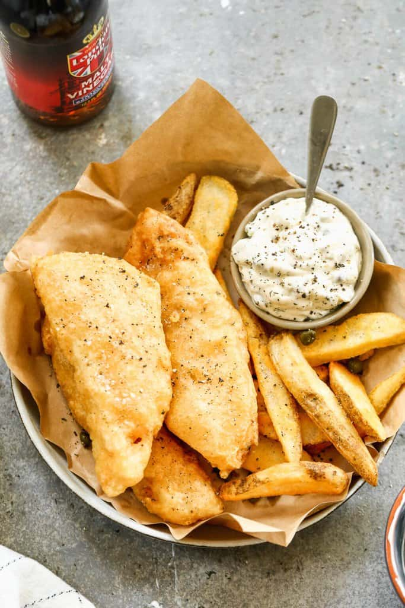

Fish & Chips

Description
easy to prepare beer-batterred Fish and Chips recipe is
crispy golden on the outside and tender and flakey on the inside. Paired
with homemade tartar sauce and fresh fries for a perfect meal.
Ingredients
- 1 1/2 lbs white fish fillets* , cut into long strips
- 1 cup all-purpose flour , plus more for dredging fish
- 1/2 cup cornstarch
- 1 1/2 teaspoons baking powder
- 1/4 teaspoon paprika
- 1/2 teaspoon salt , plus more for seasoning fish
-
1/4 teaspoon freshly ground black pepper , plus more for seasoning fish
- 1 cup cold light beer*
Directions
-
Heat Oil: Add oil to a deep pot—about 1-2 inches full–and heat oil to
350 degrees F. The oil temperature is key to success: Make sure the oil
is at the right temperature. Use a thermometer to monitor the oil temp
(at least 350 and no higher than 375). If the oil is too hot, the fish
wont cook fast enough before the coating is overly crisp. If the oil is
not hot enough, the coating will be soggy/soft instead of crisp. Also,
don’t overcrowd the pot, which can lower the oil temp, and keep the
coating from crisping.
-
Prepare Fish: Depending on the size and shape of your fillets, cut them
into strips that are long and at least 1 inch wide. Lay the fish fillets
on a paper towel and pat dry. Season them generously with sea salt and
pepper and then dredge each filet in a little bit of flour.
-
Make Batter: In a large bowl, mix the flour, cornstarch, baking powder,
paprika, salt and pepper. Whisk in the beer (or club soda) to the flour
mixture and continue mixing until you have a slightly thick, smooth
batter. If it’s too thick, add a little more beer.
-
Batter and Fry: Check oil temperature to make sure it’s about 350
degrees F. Dip prepared fillets into the batter and use a spoon if
needed to help coat the entire fillet. Working in small batches so you
don’t overcrowd the pans, carefully lower a few dipped fillets at a time
into the hot oil. Fry for approximately 5-7 minutes, turning
occasionally, until the batter is crisp and golden and the fish is
perfectly cooked. I like to cook just one at the beginning to get an
estimated cook time, before cooking more. You don’t want to overcook the
fish! Keep in mind the fish will continue to cook a little more as it
cools off on the paper towel.
-
(If you have any leftover batter, you could also dip and fry onion
rings, calamari, or shrimp!)
-
Rest: Once cooked, remove the fillets from the hot oil and drain on
paper towels. You can keep the cooked fish warm in a 200 degree oven
while you cook it all, if you want.
-
Serve: Use the same pot of hot oil to make French Fries, or make my
Baked French Fries or Air Fryer French Fries. Serve with homemade tartar
sauce (it can be made days ahead of time!) and malt vinegar, for
dipping.